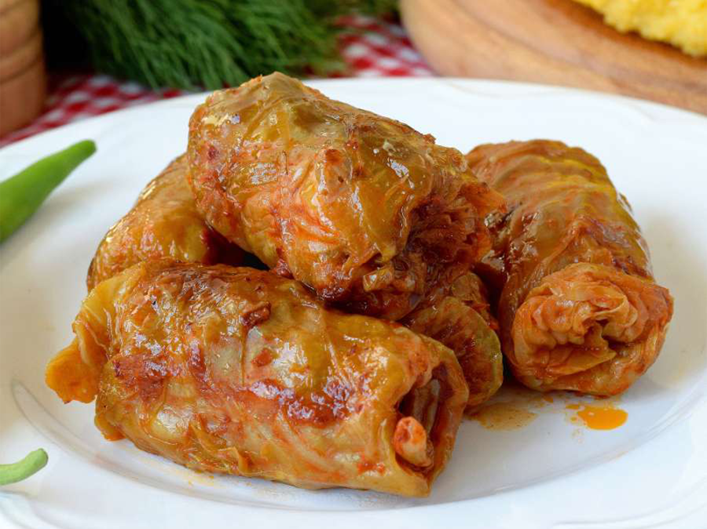

Sarma
- 4 Vitlöksklyftor
- 2 Mellastora
- 1 kg blandfärs
- 0.5 dl gristalg
- 1.5-2 matskedar Vegeta
- 1.5 dl Grötris
- Svart peppar
- Salt
- Paprikapulver
- 1 surkålshuvud
Börja med att finhacka en lök och två vitlöksklyftor. Hetta upp en panna med lite olja och gristalg och stek löken och vitlöken tills de blir mjuka och lätt gyllene. Tillsätt sedan två deciliter ris, en matsked svartpeppar och en till två matskedar paprikapulver. Blanda ordentligt så att kryddorna fördelas jämnt i blandningen. I en stor skål, blanda ett kilo blandfärs med en matsked Vegeta eller annan allkrydda. När ris- och lökblandningen har svalnat något, rör ner den i köttfärsen och blanda noggrant så att allt fördelas jämnt. Ta ett surkålshuvud och skär ett snitt runt botten för att lossa bladen. Plocka bort bladen försiktigt och skär bort de tjockaste delarna. Om bladen är väldigt stora kan de delas i mindre bitar – målet är att få mellanstora blad som är lagom att rulla dolmar med. Ta ett kålblad och lägg cirka en halv till en deciliter av fyllningen i mitten. Vik in ena kanten av bladet, rulla ihop dolmen och tryck in den andra kanten för att försegla den. Om det är svårt att vika in kanten kan man skära bort en bit av den för att göra det lättare att rulla ihop dolmen ordentligt. Lägg alla överblivna surkålsblad i botten av en stor kastrull och placera sedan dolmarna tätt intill varandra ovanpå bladen. Häll i vatten så att det nästan täcker dolmarna. För att hålla dem på plats, lägg en tallrik ovanpå och placera en skål med vatten på tallriken som tyngd. Låt dolmarna koka på låg värme i cirka två timmar.
